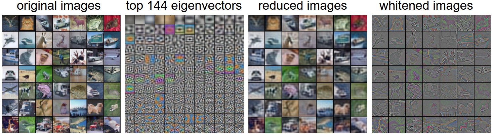

Setting up the Data and the Loss
Table of Contents
cs231n-setting-up-the-data-and-the-loss
1 Setting up the data and the Model
神经网络结构介绍了层级结构组织神经元，矩阵乘法进行神经元运算，并且需要增加非线性变换来调高神经网络的表达能力。本文主要主要介绍数据的预处理、权值初始化和损失函数等相关知识。
1.1 Data Preprocessing
输入的数据矩阵 \(X\) ，维度为[N,D]（N 表示数据个数，D 为数据的维度）。一般有如下三种预处理方法： Mean substraction 是最为常见的预处理方法。输入的数据需要与各维度的数据均值相减，几何解释是将输入的数据都转换到原点分布(0)。 numpy 中，直接执行表达式: X -= np.mean(X, axis=0) 。图像作为输入样本，可以直接减去所有像素的均值(X -= np.mean(X))，或者在每个通道单独进行处理。
Normalization 在数据的维度上独立进行归一化，这样使得每个维度的数据值维持基本比例。主要有两种归一化的方法。其一，如果输入的数据已经做 mean substraction 了，那么在每个维度上直接除以对应维度的标准差即可(X /= np.std(X, axis=0))。另外一种方法是将输入的数据最小值和最大值归一化到-1 和 1。第二种处理方法，只有在输入的数据在不同尺度上具有不同的意义，需要保留数据的差值时使用。

Figure 1: 数据预处理，中心化处理，归一化
左图 ，输入的二维数据样本。 中间 ，数据减去均值后，以原点为中心分布。 右图 ，每个数据维度除以标准差，使得数据在不同维度上的部分近似。
PCA and Whitening 是另外一种很重要的预处理。假设输入数据已经经过上述中心化处理后。计算输入数据的协方差矩阵：
# Assume input data matrix X of size [N x D] X -= np.mean(X, axis = 0) # zero-center the data (important) cov = np.dot(X.T, X) / X.shape[0] # get the data covariance matrix
协方差矩阵(covariance matrix)的 (i,j) 元素为输入数据的第 i 维数据和第 j 维数据的协方差。 \[ COV(X,Y) = E[(X-E(X))(Y-E(Y))] \\ cov_{i,j} = \frac{1}{N}\sum_{k}^{D}X_{k,i}X_{k,j} \]
对角线元素为对应的维度的方差。可知协方差矩阵为对称半正定阵。 SVD 分解：
U,S,V = np.linalg.svd(cov)
\(U\) 为矩阵的特征向量矩阵， \(S\) 为对应的奇异值。可以通过特征值，将输入数据映射到特征空间上去，这样数据之间的相关性降低：
Xrot = np.dot(X, U) # decorrelate the data
特征向量具有正交属性，为单位范数，所以可以将特征向量看作一组空间坐标基。可以通过将输入数据映射到该特征向量空间中。并且可以看到该坐标空间下的数据维度协方差矩阵变成了对角阵，表示数据维度之间无关。
并且 np.linalg.svd 返回的特征向量矩阵 U 按照特征值的大小进行了排序。所以可以通过舍弃降低特征值的特征向量来达到降维效果，叫做 Principal Component Analysis(PCA) 降维：
Xrot_reduced = np.dot(X, U[:, :100]) # Xrot_reduced becomes [N,100]
经过上述运算，可以将数据集[N,D]降维到[N,100]。并且保证 100 维的数据仍然能够保持最大的方差。该方法常常可以帮助线性分类器或者神经网络既能达到很好的性能，也能节省大量的时间和空间。
whitening 将做过 PCA 处理的数据，根据特征值的量级，将各个维度的长度归一化。几何解释是如果输入数据是多元高斯分布，那么 whitening 后的数据就是均值为 0，协方差矩阵为单位矩阵的多元高斯分布。处理方法是：
# whiten the data: # divide by the eigenvalues (which are square roots of the singular values) Xwhite = Xrot / np.sqrt(S + 1e-5)
警告：噪声。上述公式添加了 1e-5 很小的常量，避免除 0。该种方法的一个主要缺点是会将数据中的噪声放大。因为，该归一化会将所有维度的上的变量进行归一(包括特征值较小的维度，这些维度上的信息大多可以认为是噪声)，然后使得这些输入的数据和其他有用信息的输入变成相同强度。实际应用中，可以将该常量设成一个较大的值，用来平滑。

Figure 2: 数据预处理，PCA 降维，数据白化
PCA 降维/数据白化。左图为输入的原始数据。中间为 PCA 结果，使得协方差矩阵为对角阵。右图为数据白化，使得协方差矩阵变成单位阵。
CIFAR-10 训练数据集为 50K*3072，可以通过计算[3072,3902]的协方差矩阵，然后执行 SVD 分解。最后可以看一下这些特征向量的可视化结果：

Figure 3: PCA 可视化结果
左图为 CIFAR1-10 中的 49 张样本图像。二图为前 144 的特征向量。为方差最大的 144 个向量。可以看到对应的图形在样本集中较少出现。三图为 49 张样本图像经过 PCA 降维后的图像。经过 PCA 降维的图像维度将成 144 维度。最右图显示白化之后的结果。白化将 144 维的向量归一化到单位，然后加和还原成原始图像。可以看到低频信息基本丢弃了，留下的都是高频信息。
上述的 PCA 和白化操作不太适用于卷积神经网络，卷积神经网络中的数据预处理一般采取中心化和像素级归一化操作。
陷阱 预处理阶段的一些统计操作(数据均值等)只能在训练集上做，然后应用到评估和校验数据集。如果在全部数据集上做均值统计，然后去中心化，最后将数据集分割成训练/评估/测试数据集是错误的。
1.2 Weight Initialization
权重初始化会极大的影响整个神经网络的表现和训练速度。
Pitfall: all zero Initialization 所有权重初始化为 0，将会使得最后的得分函数对所有的类别的得分都是相同的，在执行反向传播过程中，全局梯度将都是相同的，这样会使得整个网络的表达降低。
Small random numbers 由于观察我们最后可能希望网络中的权值大概一半大于 0，一半小于 0，所以希望权值初始值接近 0，单由于上述原因，又不能是 0。所以，常常将权值初始化成一个较小的数，带来权值更新的多样性。 W = 0.01* np.random.randn(D,H) ， randn 会做一个均值为 0，方差为 1 的高斯采样。
Warning 但是较小的权值并不一定就会更好。例如，神经网络反向传播中层间的全局梯度传递，会将上一层的全局梯度乘以本层的局部梯度(权值)，实现误差传递。这样，如果权值初始化都是较小的值，那么会使得全局梯度随着传递越来越小，最后影响前几层的梯度更新。
Calibrating the variances with 1/sqrt(n) 上述初始化方法有一个问题，一个神经元的输出方差会随着输入的数量增大。事实证明，可以通过对权值进行 1/sqrt(n) 缩放，能够使得期望输出为 1， n 为输入维度。可以保证神经网络中的神经元的希望输出都能为 1，并且提高收敛速度。
\(s = \sum_{i}^{n}w_{i}x_{i}\) 为神经元的计算公式，整个推导过程如下：
\begin{aligned} \text{Var}(s) &= \text{Var}(\sum_i^n w_ix_i) \\\\ &= \sum_i^n \text{Var}(w_ix_i) \\\\ &= \sum_i^n [E(w_i)]^2\text{Var}(x_i) + E[(x_i)]^2\text{Var}(w_i) + \text{Var}(x_i)\text{Var}(w_i) \\\\ &= \sum_i^n \text{Var}(x_i)\text{Var}(w_i) \\\\ &= \left( n \text{Var}(w) \right) \text{Var}(x) \end{aligned}前两部参考方差属性，第三步假设输入和权值的均值都为 0， \(E[x_i]=E[w_i]=0\) 。最后一部假设的是所有的权值 \(w_i\) 和输入 \(x_i\) 都是独立分布。从上述推导，可以看到如果需要 \(s\) 的方差和所有的输入一样，那么需要使得初始化的权值的方差为 \(1/n\) 。而且 \(\text{Var}(aW) = a^2\text{Var}(W)\) ，只需要使得权值初始化从标准高斯采样，然后乘以 \(a=\sqrt{(1/n)}\) ，使得方差为 \(1/n\) 。
相同的分析可以参考 Understanding the difficulty of training deep feedforward neural networks ，论文综合考虑了最终提出初始化策略为 \(\text{Var}(w) = 2/(n_{in} + n_{out})\) ，其中 \(n_{i},n_{out}\) 为前一层和后一层的神经元个数。
更新的论文 Delving Deep into Rectifiers: Surpassing Human-Level Performance on ImageNet Classification 主要研究了 ReLU 激活函数的权重初始化策略，应该使得神经元的方差为 2.0/n ，权值初始化为 \(w = np.random.randn(n) * sqrt(2.0/n)\) ，是使用 ReLU 网络的初始化的主要策略。
Sparse Initialization 设置所有的权值值为 0，但是通过随机打断一定的神经元链接，使得梯度更新不会每次都更新相同的权值。
Initializing the biases 常规的做法，一般把偏置设为 0，因为权值已经随机初始化了。对于 ReLU 作为激活函数的网络，可以设置偏置为 0.01 一个很小的常数，这样使得最开始的神经元都是激活状态。
1.3 Batch Normalization
Batch Normalization 提供了另外一种技术，用来解决权重初始化的问题。因为归一化操作是一个可导操作，所以可以通过添加归一化层在全链接层之后，激活层之前。
1.4 Regularization(L2/L1/Maxnorm/Dropout)
神经网络有多种正则化方法，来控制模型的复杂度，从而克服过拟合：
L2 regularization 是最为常用的正则化操作，主要通过引入权值的开方作为正则损失 \(\frac{1}{2}\lambda w_2\) 。 \(\lambda\) 为正则损失系数，\(\frac{1}{2}\) 用来简化求导。 L2 regularization 主要用来惩罚较大的权值向量，并且倾向将权重值分散到每一个维度上去。在随机梯度更新时， L2 regularization 最终的作用为： \(W += -\lambda * w\) ，从而使得梯度以 \(\lambda\) 的比例衰减，但是不会最终使得权值变成 0。
L1 regularization 主要是通过引入权值的绝对值作为正则损失 \(\lambda |W|\) 。并且可以将 L1/L2 正则组合一起使用 \(\lambda_{1}|W|+\lambda_{2}w_{2}\) ，该方法叫做 Elastic net regularization 。 L1 regularization 具有将权值矩阵设置为 0 的功能，从而使得权值权值稀疏化(sparse)。 L1 regularization 的最终作用为： \(W += -\lambda * \{(\mathbb{+1}(w>0))\ or\ (\mathbb{-1}(w<0))\}\) ，使得梯度以 \(lambda\) 的值相 0 递减。
Max norm constraints 强制使得权值矩阵的范式不得超过一个上界 \(\Vert \vec{w} \Vert_2 < c\) 。 \(c\) 值一般选取 3 或者 4 的比例。该方法具有保证即使学习率较大，也不会使得整个网络爆炸。
Dropout 是一个非常有效和简单的方法，论文 Dropout: A Simple Wap to Prevent Neural Networks from Overfitting 。在训练阶段，以一定的概率 \(P\) 选取一些神经元进行工作，其他的神经元不参与此次训练。

Figure 4: Dropout
训练阶段，Dropout 可以视作对整个神经网络进行采样，只有采样的神经元才参与计算和更新。测试阶段，Dropout 不参与，并对结果得分进行一定的平均。(可以看作不同的神经网络的组合)
如下是一个三层的神经网络的简单 Dropout 技术实现：
""" Vanilla Dropout: Not recommended implementation (see notes below) """ p = 0.5 # probability of keeping a unit active. higher = less dropout def train_step(X): """ X contains the data """ # forward pass for example 3-layer neural network H1 = np.maximum(0, np.dot(W1, X) + b1) U1 = np.random.rand(*H1.shape) < p # first dropout mask H1 *= U1 # drop! H2 = np.maximum(0, np.dot(W2, H1) + b2) U2 = np.random.rand(*H2.shape) < p # second dropout mask H2 *= U2 # drop! out = np.dot(W3, H2) + b3 # backward pass: compute gradients... (not shown) # perform parameter update... (not shown) def predict(X): # ensembled forward pass H1 = np.maximum(0, np.dot(W1, X) + b1) * p # NOTE: scale the activations H2 = np.maximum(0, np.dot(W2, H1) + b2) * p # NOTE: scale the activations out = np.dot(W3, H2) + b3
训练阶段，在各个隐含层的结果进行一定的 Dropout，进行反向传播的时候，需要使用对应的 mask 来进行梯度更新。
测试阶段，没有 Dropout 操作，但是需要在隐层的输出值上做一个衰减。因为测试阶段，所有的神经元的结果都参与计算，所以为了保证神经元输出值的期望和训练时一致，需要对输出的值进行衰减。例如： \(P=0.5\) 的时候；训练时，一个具有 Dropout 的神经元输出期望值为 \(Px+(1-P)0\) 。测试阶段，为了使得期望值一直，需要做一下衰减 \(x \rightarrow px\) ，可以视作对所有的可能的子网络进行了遍历，然后输出期望值。
由于测试阶段对性能需求较高，也可以使用 inverted dropout ，在训练阶段就直接执行调整，从而使得测试阶段的结果不需要处理。
""" Inverted Dropout: Recommended implementation example. We drop and scale at train time and don't do anything at test time. """ p = 0.5 # probability of keeping a unit active. higher = less dropout def train_step(X): # forward pass for example 3-layer neural network H1 = np.maximum(0, np.dot(W1, X) + b1) U1 = (np.random.rand(*H1.shape) < p) / p # first dropout mask. Notice /p! H1 *= U1 # drop! H2 = np.maximum(0, np.dot(W2, H1) + b2) U2 = (np.random.rand(*H2.shape) < p) / p # second dropout mask. Notice /p! H2 *= U2 # drop! out = np.dot(W3, H2) + b3 # backward pass: compute gradients... (not shown) # perform parameter update... (not shown) def predict(X): # ensembled forward pass H1 = np.maximum(0, np.dot(W1, X) + b1) # no scaling necessary H2 = np.maximum(0, np.dot(W2, H1) + b2) out = np.dot(W3, H2) + b3
如下是 Dropout 相关的论文可以参考：
Theme of noise in forward pass Dropout 在向前传播中引入随机。在测试阶段，噪声因为乘以一个比例衰减和由于对不同的子网络结果进行的加和平均而变得不重要。另外一个研究方向为 DropConnect ，在向前传播过程中，随机初始化一些权值为 0.卷积神经网络采取 stochastic pooling ， fractional pooling 等方法引入随机性，从而增强网络的表达能力。
Bias regularization 由于偏置的大小一般和网络的表达能力无关，所以对偏置进行正则化往往效果较差。
Per-layer regularization 一般不会对不同层的权值采取不同的正则化方法。
2 Loss functions
损失函数第二部分为数据损失(data loss)，用来度量预估的结果与真实结果的差距。损失函数一般为对单个样本损失值加和平均， \(L=\frac{1}{N}\sum_{i}L_{i}\) ，其中 \(N\) 为训练样本数量。设置 \(f=f(x_{i};W)\) 为神经网络的最后输出层结果，实际中还需要去解决几个问题：
Classification 为样本集的每个样本都只有一个正确标签，最为常用的两个损失函数为 SVM : \(L_i = \sum_{j\neq y_i} \max(0, f_j - f_{y_i} + 1)\)
有些研究表示， squared hinge loss 具有更好的表现(\(\max(0, f_j - f_{y_i} + 1)^2\))。第二个常用的损失函数为 Softmax classifier 采取的交叉熵损失 (cross-entropy)： \(L_i = -\log\left(\frac{e^{f_{y_i}}}{ \sum_j e^{f_j} }\right)\)
Problem: Large number of classes 当标签类别特别大的时候(预估下一个单词， ImageNet 包括 22K 个分类标签)，常常使用 Hierarchical Softmax (论文)。层级 Softmax 将标签组织成树状结构，任意一个标签被表示为树中一个路径，每个分叉的节点都会训练一个 Softmax classifier 来将样本分到左右子树。
Attribute classification 为目标为一个二值向量，每个值互相之间没有影响。例如一个图像具有多个主题分类。一个简单的方法是在每一个二分类目标上都训练一个独立的分类器，那么损失函数为： \(L_i = \sum_j \max(0, 1 - y_{ij} f_j)\)
\(y_{ij}\) 为+1 或者-1，用来表示样本 i 在属性 j 上是否打上标签。
另外一种模型是逻辑回归分类器(logistic regression classifier)，一个二值逻辑回归分类器只有两类标签(0,1)，标签为 1 的概率为： \[P(y = 1 \mid x; w, b) = \frac{1}{1 + e^{-(w^Tx +b)}} = \sigma (w^Tx + b)\]
标签 0 的概率为 \(P(y = 0 \mid x; w, b) = 1 - P(y = 1 \mid x; w,b)\) 。如果样本得分 \(\sigma (w^Tx + b) > 0.5\) ，则为正样本(y=1)。损失函数为最大似然： \[L_i = \sum_j y_{ij} \log(\sigma(f_j)) + (1 - y_{ij}) \log(1 - \sigma(f_j))\]